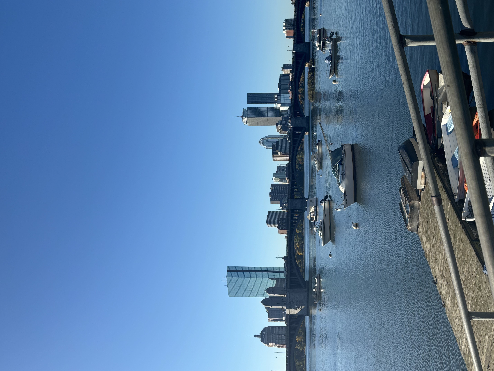
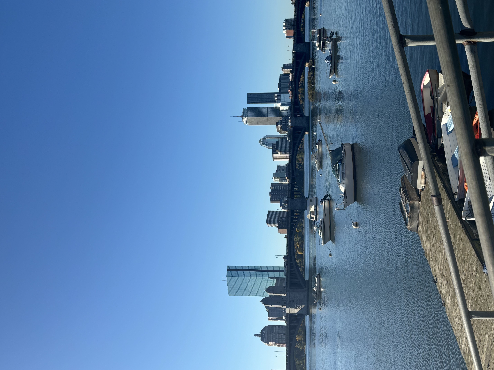
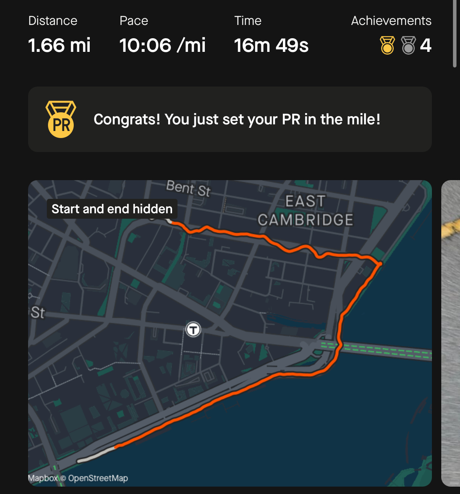
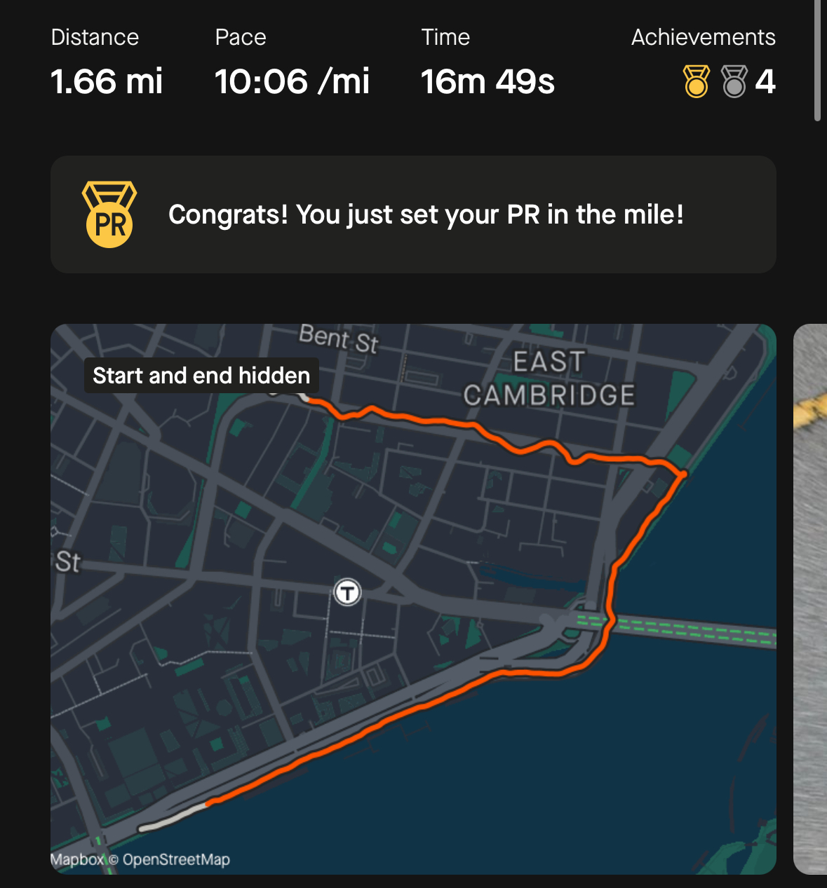
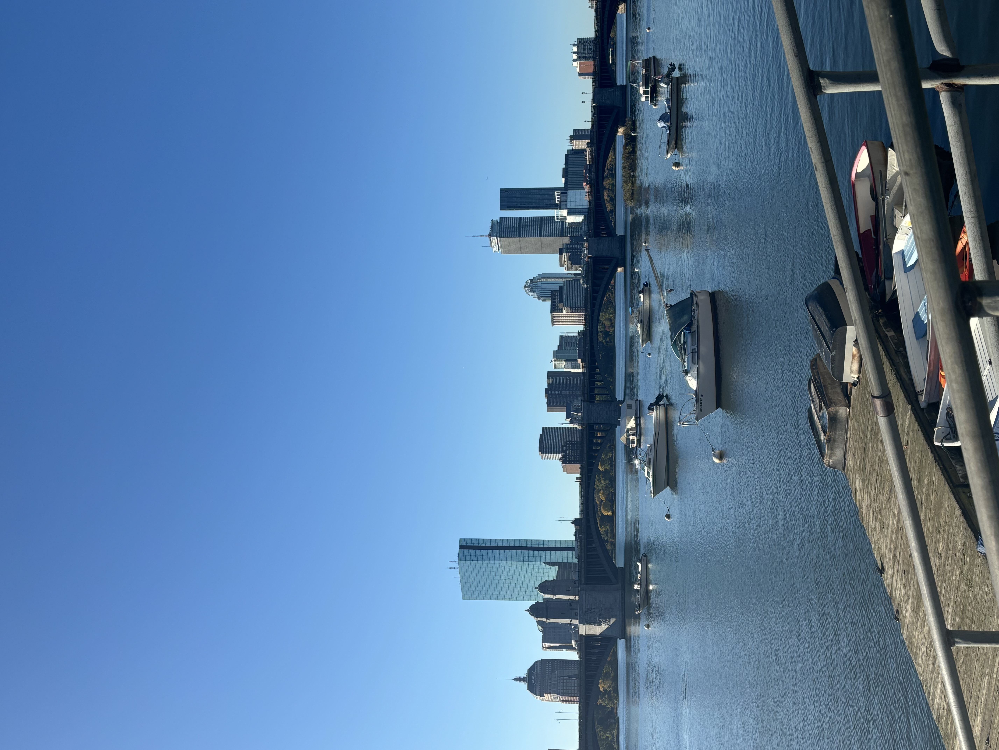
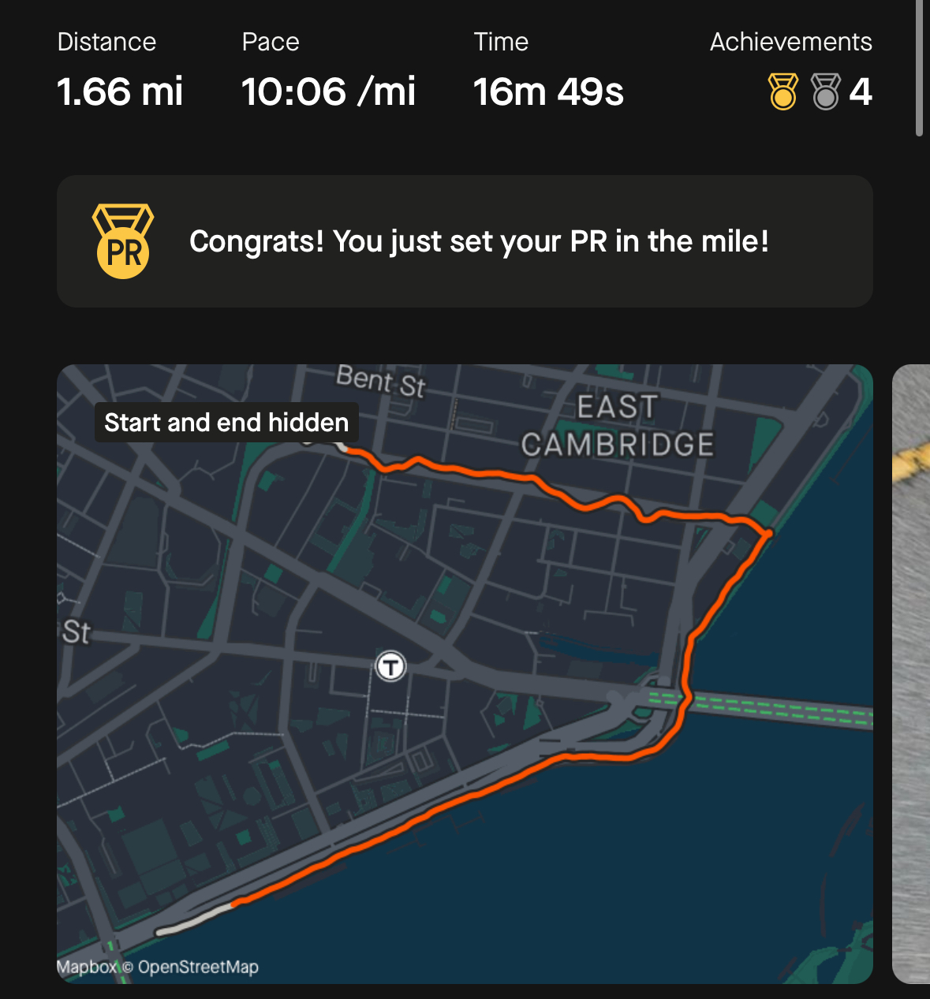
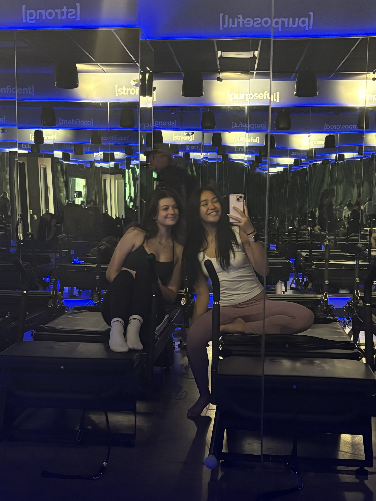
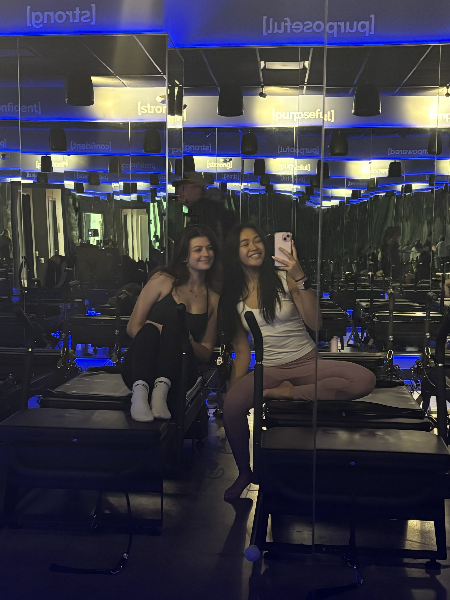
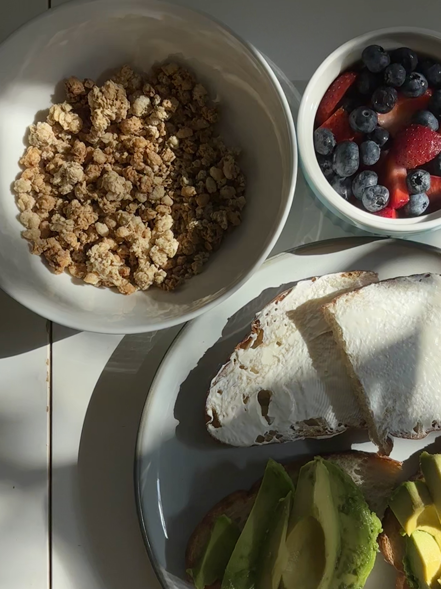
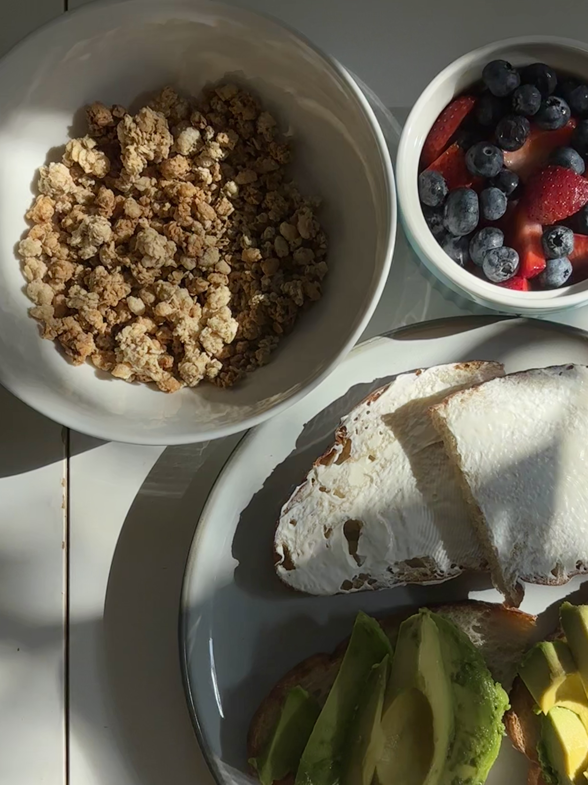

 

I used to run when I was in high school and only recently got back into it! I'm nowhere near as fast as I used to be, but I've been mainly working towards gaining my endurance back. Right now, my favorite place to run is the Esplanade because of the gorgeous view of the Charles River. I've also recently signed up for the Bedford, MA half marathon! I decided to train for it because it's supposed to take place on March 16, my birthday, and it'd be a great milestone to hit!
Below you can see a picture of me with my post-run treat, an iced matcha latte from Area Four. I also included some of the views I've gotten to see while on my runs! I also decided to add in a picture of my strava work out... again I'm not fast anymore, but I'm trying to get back there!


Pilates is a hobby I've also picked up recently. My roommate encouraged me to give it a shot, and we've been going once a week together ever since! It's a tough workout and leaves me sore for days on end, but the sense of accomplishment I feel after each class keeps me coming back!
Below you can see some pictures of my roommate and I before class and the outside of the studio itself!
 


I've been baking and cooking since I was in middle school. I wouldn't say I'm the best at either, but I definitely know my way around a kitchen! Some of my favorite things to bake are brownies, macarons, and sponge cakes. In terms of cooking, I don't know how to cool a lot, but salmon and egg salad are the two things I will make whenever I get hungry!
Below you can see some pictures of food I've whipped up myself and with friends!
 
